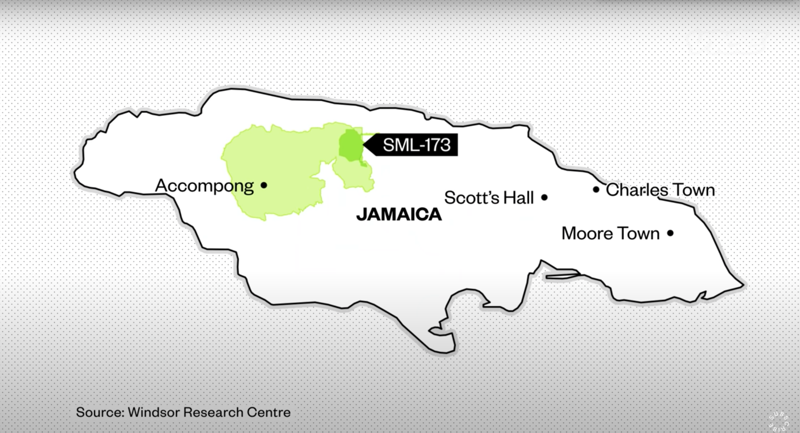

Five hundred square miles of a lush tropical wonderland crossing six parishes in Jamaica is currently home to about 5,000 maroon descendants. During the 18th century, this steep, hilly area was used by Maroon as a stronghold against the British. Its harsh terrain proved advantageous to these escaped enslaved people in their fight against their former captors. Relentlessly did this community of warriors fight to free their brethren from plantations; eventually, their battle for freedom proved formidable to the British, and a treaty was formed between the Leeward Maroons that granted the majority of the Cockpit Country sovereign Territory.
Bauxite, used to create aluminum, has always been one of Jamaica's most exported resources. Recently, established mining pits are beginning to run dry. The government of Jamaica looks to the protected Cockpit Territory as a target for their exploits. Officially, Noranda Jamaica Bauxite Partners II, the mining company, is filing permits to begin mining on this sovereign land. Let it be known that the Jamaican government owns 51% of Noranda of the company's mining operations.
Unfortunately, like many other countries once colonized, Jamaica is left in the rubble of a broken system, mentally and with a lack of interest in its people's health. Corruption runs deep, and the government that swears to protect its people instead lines the pockets of foreign forces and their own. Just a couple meters from the town's boards, residents are navigating their lives around the disruptive unearthing of their resources.
In 2017, Prime Minister Andrew Holness proposed a new boundary of the cockpit country protected area and excluded a small region dubbed SML 173, Special Mining Lease 173. The decisions about SPECIFIC sections of land do not include a representative of the land; the indigenous people do not get a say. Noranda received a permit to mine 1,333 Hectares of land within SML-173. This area has farming land, schools, and a large underground aquifer.
Prime Minister Holness met with leaders of Scott's Hall, Moore Town, and Charles Town for the permits to mine area SML-173. These towns are in completely different parishes.